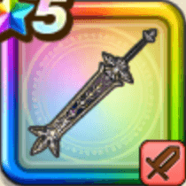

メタルキングの大剣
攻略班 9.5点 / メタル超会心のかまえ次元斬グランドネビュラブラックホールキングタイム復讐の誓い
くわしい特徴
【レベル別習得スキル】 Lv1【ドラゴン】攻撃力+5 Lv1【守り人】守備力+5 Lv10メタル超会心のかまえ（消費MP：最大MPの15%）次のターンまで受けるダメージを一部を除き半減し、次のターンにおこなう攻撃が超会心の一撃に変化する(戦闘中2回のみ使用可能) Lv20次元斬（消費MP：42）敵1体に敵ごとに有効なヒャド属性かドルマ属性の580%斬撃ダメージを与え、自身にまもりのたてを2ターン付与(※ブラックホール中ガード・みかわしされない) Lv30グランドネビュラ（消費MP：58）敵全体に敵ごとに有効なヒャド属性かドルマ属性の威力530%の斬撃ダメージ(メタル系に+80)を与える(※ブラックホール中ガード・みかわしされない) Lv33けもの系へのダメージ+5% Lv36悪魔系へのダメージ+5% Lv40攻撃力+12 Lv43【両】全属性ダメージ+3% Lv46【両】スキルの斬撃ダメージ+3% Lv50ブラックホール（消費MP：最大MPの2%）戦闘開始時に領域「ブラックホール」を発動する。ブラックホール発動中は味方の攻撃でHPが15%以下になった敵を消滅させる(一部を除く) Lv50キングタイム（消費MP：8）戦闘開始時にまれに味方全体を優先して行動させ、敵にメタル系が含まれているなら味方全体を優先して行動させる Lv50復讐の誓い（消費MP：最大MPの2%+30）戦闘中自身が会心の一撃を3回発生させると領域「ブラックホール」を発動し、自身にバイキルトを付与する 【限界突破スキル】 1凸スキルの斬撃・体技ダメージ+7% 2凸スキルの斬撃・体技ダメージ+7% 3凸スキルの斬撃・体技ダメージ+7% 4凸スキルの斬撃・体技ダメージ+7%